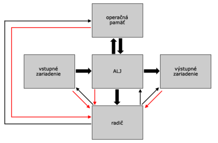
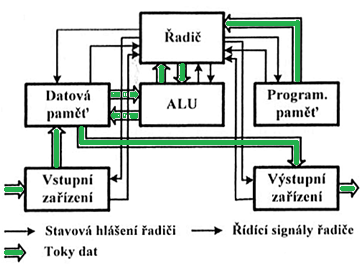
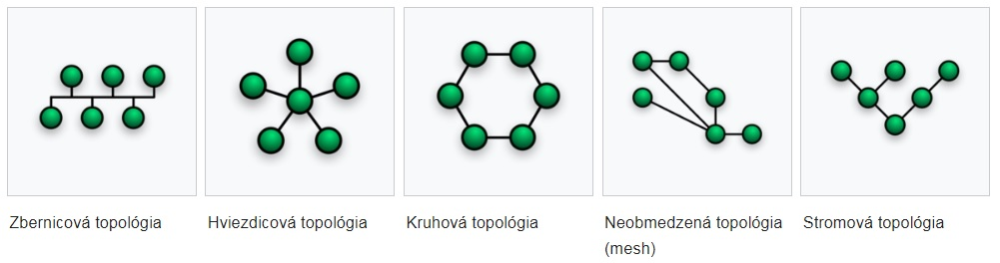
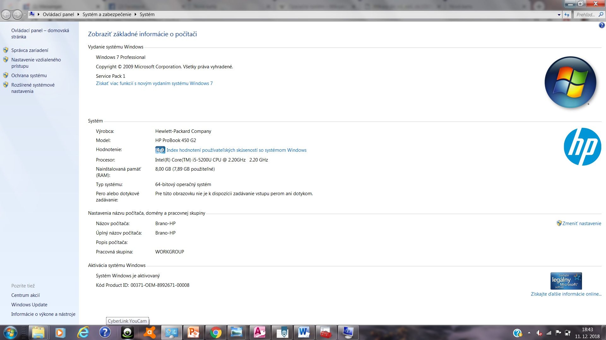
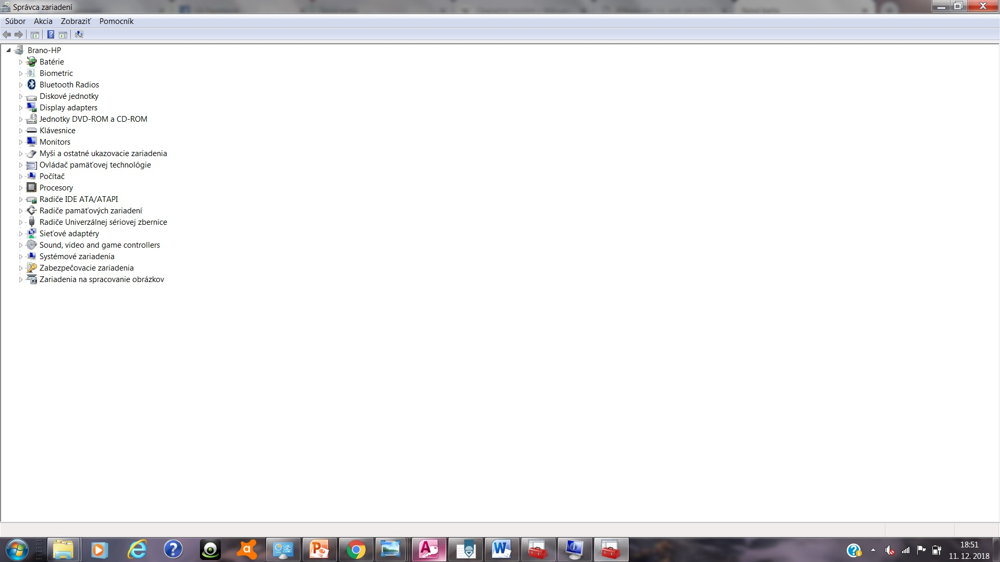

1. Von Neumannova architektúra
1. ALU – Aritmeticko-Logická jednotka – jednotka vykonávajúca všetky aritmetické a logické operácie(sčítanie, odčítanie, porovnávanie a pod). Úlohou ALU je krok po kroku vykonávať program uložený v pamäti.
2. Operačná pamäť – slúži ako skladisko pre samotný program, dáta programu, dočasné skladisko pre medzivýpočty a samotné výsledky.
3. Radič – riadiaca jednotka počítača, ktorá riadi jeho celú činnosť. Toto riadenie sa uskutočňuje pomocou riadiacich signálov, ktoré predáva každému zariadeniu.
4. Vstupné zariadenie – zariadenie, ktoré slúži na vstup programu a dát.
5. Výstupné zariadenie – zariadenie, ktoré slúži na výstup spracovaných dát, ktoré ALU spracovala pomocou programu.
1.1 sedem VonNeumanových princípov
1.počítač obsahuje operačnú pamäť2.počítač obsahuje ALJ
3.počítač obsahuje radič
4.počítač obsahuje vstupné a výstupné zariadenia
5.počítač obsahuje pamäť na dlhodobé uchovávanie dát
6.počítač pracuje v dvojkovej sústave
7.počítač je univerzálny a je riadený programom
2. Harvardská architektúra
-sa využíva v jenoúcelových zariadeniach
-inštrukcie a dáta sú uložené v rôznych pamäť. priestoroch
-súčasne sa môžu spracovávať aj inštrukcie aj dáta
-inštrukcie a dáta sú reprezentované dvojhodnotovo (dvojková sústava)
3. generácie počítačov
Nultá generácia - rôznorodá skupina počítačov vzniknutých do roku 1949- obsluhovlo ich veľa ľudí, potrebovali vlastné elektárne, mali malú výpočtovu kapacitu a obrovské rozmer
- základnými konštrukčnými prvkami boli elektromagnetické relé
- patria sem počítače Mark I, u nás to bol počítač SAPO (reléový počítač s bubnovou pamäťou)
1.generácia - obdobie rokov 1949-1956 - základný konštrukčný prvok je elektrónka
- ich orzmery sa zmenšovali
- programovanie prebiehalo v strojovom jazyku
- ich rozmach je v r. 1951
- patria sem amer. počítače UNIVAC a IBM 650
2.generácia
- ako základné konštrukčné prvky sa používali polovodičové a feromagnetické prvky – tranzistory
- programovalo sa v rôznych symbolických jazykoch, dierne štítky
- napájali sa zo siete
- využívali sa hlavne na spracovanie úloh v dávkach a to pri spracovaní vedecko-technických výpočtov a hromadných údajov
- rozmach v r. 1958-1960
3.generácia
- základným konštrukčným prvkom sú integrované obvody malej a strednej integrácie - jeden integrovaný obvod - čip - nahradil až 10 000 tranzistorov, preto sa výrazne zmenšujú rozmery počítačov
- v pamäťových zariadeniach sú rýchle prvky, tzv. magnetické vrstvy
- objavuje sa strojový programovací jazyk assembler
- za začiatok tejto generácie sa považuje r. 1964 - uvedenie počítača IBM System/360
- objavujú sa prvé OS
4.generácia - obdobie 1981 - 1990
- nájdeme tu integrované obvody strednej a veľkej integrácie
- charakteristické sú malé rozmery, veľká rýchlosť, veľká kapacita pamäte a dialógová spolupráca s užívateľom
5.generácia - obdobie od začiatku 90. rokov
- obvody s vysokým stupňom integrácie
- viac procesorov na l čipe
- klasická von Neumanova štruktúra počítača sa priblížila hraniciam svojich mož ností a dnes nastupuje jej protiklad - paralelný počítač. Paralelný počítač je ešte stále veľmi drahá záležitosť. Je vhodný najmä vtedy, keď je rozhodujúcim faktorom rýchlosť (napr. v kozmonautike, vojenstve a v riadicich apli káciách
- kvantové PC
4. Základné časti PC
-časti PC sa delina na interne a externé1.Procesor - Riadi celý počítač na základe pokynov - inštrukcií.
-taktovacia frekvencia - hovorí koľkokrát je možné zmeniť stav z 0 na 1 alebo opačne za sekundu. uvádza sa v Mhz alebo Gh
2.Základná doska - zjednocujúcim prvkom v počítači, všetky ostatné moduly, súčasti, diely a periférie sa priamo, alebo nepriamo vkladajú, alebo pripájajú k matičnej doske
Chipset - delí sa na severný a južný mos
Severný most - zabezpečuje komunikáciu medzi CPU(procesorom), pamäťou RAM, zbernicou PCI Express a spojenie s južným mostom Južný most - stará sa o pripojenie preriférnych zariadení k základnej doske (prvky pripojené prostr. rozhrania PCI a USB, diskovy systém, disketová mechanika, klávesnica, myš ...)
Socket - konektor na základnej doske určený pre pripojenie procesor
3.Operačná pamäť - úložisko informácií, s kt. procesor momentálne pracuje
4.Pevný disk - Dlhodobo uchováva informácie
5.Grafická karta - komponent počítača, ktorý zabezpečuje zobrazenie informácií na zobrazovacej jednotke (monitore).
6.Zdroj -zabezpečuje dodávku energie pre systém transformovaním vstupného napätia na napätia požadované
5. Hardvér a Softvér
Hardvér je súhrnný názov pre technické vybavenie počítača a počítačových komponentovSoftvér je označenie pre programové vybavenie počítača alebo súhrn všetkých programov
6.Pamäte, zbernice, karty
Pamäte sa delia na volatilné a nevolatilné. Volatilné pamäte sa po odpojení napätia vymažú. Nevolatilné sa po odpojení napätia nevymažú, informácie sa v nich uchovajú. Operačná pamäť RAM (vnútorná) – slúži na zapamätávanie bezprostredne vykonávaného strojového kódu a dát, s ktorými sa práve pracuje. Musí byť rýchla, musí mať možnosť čítať a zapisovať dáta.Vyrovnávacie pamäte CACHE – používaná procesorom počítača na zníženie priemernej doby prístupu do hlavnej pamäte. Majú veľkosť od niekoľko kB do niekoľko MB. Slúži ako vyrovnávacia pamäť medzi rýchlym procesorom a pomalou hlavnou pamäťou
Vonkajšie pamäte HDD, SDD – slúžia na uloženie dát a programov, ktoré majú byť uchované aj po vypnutí počítača
Register -je pamäťové miesto, ktoré slúži procesoru na uchovávanie údajov, ktoré práve spracováva
ROM - určená len na čítanie, informácie sa ukladajú pri výrobe
PROM – jednorázovo naprogramovateľná ROM
EPROM - viacnásobne elektricky programovateľná, maže sa ultrafialovým svetlom a vyžaduje špeciálny programátor
EEPROM - viacnásobne elektricky programovateľná, nepotrebuje programátor
FLASH – viac programovacích cyklov
RAM - slúži na uchovávanie medzivýsledokv procesora
Zbernica počítača - predstavuje sústavu vodičov, pomocou ktorých je nejaká jednotka spojená s procesorom, pamäťou a vstupno / výstupnými obvodmi. Je to akási dopravná infraštruktúra, pomocou ktorej sa dopravujú údaje medzi jednotlivými prvkami osobného počítača. Zbernica v sebe zahŕňa aj spôsob komunikácie, komunikačný protokol.
Rozhranie - koncovka, konektor, port Karty - rozhranie počítača pre komunikáciu s ďalšími perifériami .Sú to rozširujúce dosky s elektrickými obvodmi- obsahujú sadu čipov, alebo celých mikroprocesorov. Ich úlohou je zabezpečovať základné a ďalšie funkcie počítača, napr. prehrávanie a tvorba zvuku, zrýchlenie grafického výkonu atď.
7.Periférne zariadenia
Vstupné zariadenie - alebo vstupná jednotka je periférne zariadenie (hardvér) počítača, ktorá umožňuje vstup údajov alebo signálov do počítača za účelom ich ďalšieho spracovania alebo ich využitia pre riadenie počítača a k nemu pripojených zariadení. Vstupné zariadenie transformuje informácie z “vonkajšieho” sveta do formy použiteľnej pre počítač. Vstupné zariadenia často slúžia užívateľovi – človeku ktorý ich používa pre zadanie príkazov, alebo ďalších informácií spracovávaných počítačom. Počítač odpovedá užívateľovi pomocou výstupných zariadení počítača. Typickým príkladom vstupného zariadenia je klávesnica, alebo myš.Výstupné zariadenie - alebo výstupná jednotka vo výpočtovej technike je periférne zariadenie (hardvér) počítača, ktoré umožňuje výstup dát alebo signálov z počítača vo forme zrozumiteľnej človekom (napr. obrazová, textová alebo zvuková informácia), alebo v inej forme za účelom ich ďalšieho spracovania alebo využitia pre riadenie k počítaču pripojených zariadení. Počítač dostáva informácie a príkazy od človeka, alebo iných technických zariadení pomocou vstupných zariadení počítača. Niektoré zariadenia sú kombinované vstupno-výstupné zariadenia. Typickým príkladom výstupných zariadení je počítačový monitor (displej), projektor, tlačiareň, plotter, počítačové reproduktory, slúchadlá a podobne.
Vstupno-výstupné periférne zariadenia počítača - tvoria osobitnú a veľmi rozsiahlu skupinu prídavných zariadení počítača. Ich základnou vlastnosťou je to, že slúžia na záznam a čítanie informácií spracovaných počítačom. Platí zásada, že ak sa informácie zaznamenávajú, zariadenie slúži ako výstupné a ak sa informácie zo zariadenia načítavajú, zariadenie slúži ako vstupné zariadenie.
8.Princíp práce prídavných zariadení
Laserová tlačiareňZaložená na elektrostatickom princípe. Laser vysiela lúč na válec - dochádza k jeho nabitiu, tak sa na válci vytvorí obraz celej tlačenej strany. Válec prechádza okolo tonera, ktorý sa vplyvom elektrostat. poľa prichytí na povrch válcapa. Pier kt. vstupuje do tlačiarne sa nabije na vyšší potenciál ako válec. Keď papier prechádza okolo válca dôjde k pritiahnutiu tonera z nabitých miest válca na papier.
Atramentová tlačiareň - tlačová hlava vystreľuje atrament na papier, bezdotyková tlač CMYK
Ihličková tlačiareň - ihličky sú prepojené s elmagnetom, kt. ich pri tlači vystreľuje proti farebnej páske. Páska dopadne v danom bode na papier, kde vytvorí čierny bod
Skener
- pozdĺž predlohy sa pohybuje snímacia hlava kt. osvetľuje predlohu výbojkou.S vetlo sa od predlohy odráža späť k hlave, kde sú umiestnené senzory CCD kt. prevádzajú svetlo na el. signál. Tieto signály sa prevedú na binárny signál.
LCD Monitor - zobrazovacia časť LCD monitora je zložená z kvapalných kryštálov, ich ovládacích elektród, polarizačných filtrov a zdroja svetla. Bez napätia sú molekuly v chaotickom stave - spôsobujú, že svetlo zo zdroja neprejde cez LCD vrstvu. Privedením napätia na elektródy sa tekuté kryštály natočia do špirálovej štruktúry tak, že rotujúce svetlo prejde cez polarizačný filter a LCD bod sa javí ako priehľadný.
9.Kategorizovanie počítačov
Delenie: kancelárske, herné, tower, desktop,...10.Operačný systém
Operačný systém je súhrnné označenie pre programové prostriedky počítača Operačný systém je súbor programov, ktorý riadi a kontroluje činnosť hardwaru, ale aj software v počítači, stará sa o efektívne využitie operačnej pamäte a procesora, o optimálnu komunikáciu medzi všetkými používanými technickými aj programovými prostriedkami. Operačný systém je základnou súčasťou softvéru každého (osobného) počítača. Operačný systém je základnou súčasťou softvéru každého (osobného) počítača. jednoužívateľský - v danom čase umožňuje pracovať iba jednému uživateľoviviacužívateľský - v danom čase umožňujú pracovať viacerým používateľom súčasne
jednotaskový (jednoúlohové) - umožňujú v danom čase pracovať s jednou úlohou
multitasking -prepínanie medzi úlohami takou rýchlosťou že užívateľ vidí ako keby procesy pracovali súčasne.
viactaskový (viacúlohové) - umožňujú v danom čase pracovať s viacerými úlohami
11. Vrstvová štruktúra OS
- Hardware
- Firmware
- BIOS
- Operačný systém
- Aplikácie
12.Správa procesov, pamäte, zariadení, súborov
Správa procesov
Proces-úloha ktorá je vyvolaná aplikáciou, užívateľom alebo opreračným systémomStavy proces
- novovytvorný – práve vznikol a ide na spracovanie
- bežiaci – úloha práve aktuálne prebieha
- ukončený- úloha práve bola vykonaná
- čakajúci – vykonaná úloha sa odkladá
- pripravený- pripravený poskytnúť dané informácie
Správa pamäte
Pamäť slúži na ukladanie informácií. Prideľuje adresu dátam Fragmentácia – niektoré súbory sú už z pamäte vymazané riešenie na to je defragmentáciDefragmentácia – uprace a pospája údaje dohromad
Súborová systém – FAT – alokačná tabuľka s diskom ktorí zaznamenáva pozície a v tabuľke sú adresa začiatku, adresa konca a adresa pokračovania(alokačná jednotka 512 Byte)
NTFS- žurnovací operačný systém 4TB, robí zápisy aké zmeny nastali podla toho sa daju nastavi
EXT3-používa sa v Linu
Správa zariadení
ake zariadenia sú pripojené k pc a ako sa volajú, komunikujú cez komunikačné linkVstupné a výstupné zariadenia bez ohľadu na spôsob pripojenia používajú štyri základne techniky riadenia prenosu:
- programové riadenia vstupu a výstupu
- 2.riadenie na základe prerušenia
- priamy prístup k operačnej pamäti (DMA – Direct Memory Access)
- 4.vstup a výstup pomocou špecializovaného procesoru
Správa súborov
Súbor – konkrétna informácia(grafická, textová)Adresár – pomyslený priestor do ktorého môžem ukladať súbory
13.Porovnanie Windowsu s Linuxom
Windows
Je to najrozšírenejšia platforma. Využíva sa na bežnú kancelársku prácu(Microsoft Office), na hry,prehrávanie hudby a videií a rôzneho bežného používania.Klady:
- takmer všetky software sú kompatibilné s Windowsom
- široká zákadňa diskusných fór
- väčšina domácnosti a firiem používa Windows
- Na windowse je veľa malvérov, vírusov a obsahuje všeobecne najviac bezpečnostných chýb
- Windows nie je zadarmo
- Robustný operačný systém, ktorý zaberá veľa miesta na HDD
Linux
Linuxom je označované jadro (kernel).Toto bezpečné a funkčné jadro umožňuje vývojarom vyrobiť si vlastný operačný systém(Android, Ubuntu,...)Klady:
- Používa sa pri vysokokritických nasadeniach
- Nepotrebujeme externé ovládače
- Je to freeware
- Mnohé programy nie sú kompatibilné s Linuxom
- Na podrobné vyladenie systému je potrebné sa naučiť pracovať s príkazovým riadkom
- Veľmi sa nepoužíva(nedistribuje)
14.Príkazový riadok
Príkazový riadok (tiež CLI, čo je skratka Command Line Interface) predstavuje používateľské rozhranie, pri ktorom užívateľ komunikuje s programom alebo operačným systémom prostredníctvom textových príkazov. V najjednoduchšej podobe program zobrazí prompt, užívateľ zapíše príkaz nasledovaný parametrami, riadok ukončí a program príkaz vykoná.Príkazy:
práca s priečinkami - zobrazenie priečinkov- cd ..\; výpis zložky - dir;zistenie ip adresy - ipconfig; pingnutie stránky - ping stranka.sk;smerovanie stranky - tracert stranka.s
15.Prístupové práva
Oprávnenie na daného užívateľa rwx – čitať,písať,vykonavať. Poznáme prístupové práva pre administrátora,užívateľa a skupinu užívateľ16.Počítačová sieť
Počítačová sieť (angl. computer network) je súhrnné označenie počítačov, pomocou ktorých je realizované prepojenie a výmena dát medzi počítačmi. Umožňuje používateľom komunikáciu podľa zadaných pravidiel. Najčastejším dôvodom pripojenia k sieti je zdieľanie informácií a technických zariadení.Rozdelenie sietí podľa veľkosti
- Personal area network (PAN) - veľmi malá osobná sieť. Spolupracujúce zariadenia obvykle slúžia len jednej osobe (typicky prepojenie mobilu a počítača, PDA, notebooku ...)
- Local area network (LAN) – lokálna počítačová sieť. Spájajú počítače v rámci malého územia, resp. v rámci jednej budovy
- Metropolitan area network (MAN) – metropolitná sieť. Sieť tohoto typu prepája lokálne siete v mestskej zástavbe - obvykle je obmedzená na jedno mesto.
- Wide area network (WAN) – rozsiahla sieť. Spája rôzne LAN a MAN siete v pôsobnosti krajín, kontinentov ale i sveta.
Rozdelenie podľa funkčného vzťahu
- Client-server: Server poskytuje služby staniciam – klientom (workstation, pracovná stanica). Serverov môže byť viacero typov - podľa typu poskytovaných služieb - súborový server, tlačový server, poštový server, www server, ftp server ... nemusí platiť vzťah, že jeden server je jeden počítač. Na jednom fyzickom počítači môže existovať viacero serverov.
- Peer to Peer: Termín pochádza z angličtiny a znamená „rovný k rovnému“, označuje sa tiež ako p2p sieť. Každá stanica v sieti môže vyčleniť nejaký svoj prostriedok (diskový priestor, tlačiareň, mechaniku ...) na zdieľanie. Iná stanica môže tieto prostriedky využívať. Tento typ siete obvykle nemá centrálnu správu, každý uzol sa spravuje sám. Zdieľanie prostriedkov je možné aj cez internet.
Rozdelenie podľa topológie
Architektúra sietí
- Architektúra SNA (System Network Architecture): Bola prvou architektúrou, ktorá slúžila na prepojenie terminálov IBM s centrálnymi počítačmi triedy
- Architektúra OSI-RM (Open System Interconnection-Reference Model): Tento typ bol vytvorený medzinárodnou štandardizačnou organizáciou ISO. Rozčleňuje komunikáciu na sedem vrstiev a to fyzickú, linkovú, sieťovú, transportnú, relačnú, prezentačnú, aplikačnú. Funkciou každej vrstvy modelu OSI je poskytovanie služieb vrstve vyššej.
- Architektúra TCP/IP (Trasport Control Protocol/Internet Protocol): Bola vytvorená počas prác iniciovaných Ministerstvom obrany USA na sieti ARPANet. Model sa skladá zo štyroch základných vrstiev: vrstva sieťového rozhrania, vrstva internet, transportná vrstva, aplikačná vrstva.
17.Demonštrujte získavanie informácií o systéme a zariadeniach, priečinkoch a súboroch
Systémové informácie
Správca zariadení

18.Činnosť pri práci so súbormi a priečinkami
Súbory
Údaje sa na externé pamäte ukladajú vo forme súborov. Súbor je zoskupenie kódovaných údajov, ktoré spolu nejakým spôsobom súvisia. Spôsob kódovania údajov a ich zoradenie určuje formát súboru. Formáty súborov sa rozpoznávajú väčšinou podľa prípony súboru (napr. .txt, .html, .docx, .jpeg, .mp3, .avi ...).Súbory obsahujúce údaje sa vytvárajú pomocou aplikácií, ktoré slúžia na ich spracovanie.Spustiteľné súbory vznikajú preložením zo zdrojových kódov. Zdrojové kódy sú programy napísané v programovacom jazyku, ktoré sa pomocou prekladača preložia do binárneho kódu, ktorý dokáže spracovať procesor počítača.Priečinky
Súbory, ktoré spolu nejakým spôsobom súvisia, sú uložené do priečinkov, ktoré tiež nazývame adresármi. Vo svojej podstate sú priečinky taktiež súbory označené špeciálnym príznakom, ktorý hovorí, že daný súbor reprezentuje priečinok. Priečinky sú usporiadané do stromovej štruktúry. Priečinok, ktorý sa nachádza na najvyššej úrovni nazývame koreňovým priečinkom.19.Aplikácie dodávane s OS, príkazový riadok, prostredie OS
Príkazový riadok viď. otázka 14.Prostredie OS:Desktopové prostredie alebo pracovné prostredie je grafické prostredie na správu počítača založené na pripodobnení k pracovnej ploche. Obsahuje ikony, panely nástrojov, applety, aplikácie a funkcie ako drag and drop. Desktopové prostredia populárnych proprietárnych operačných systémov Microsoft Windows a Mac OS X sú pomerne nemenné (neprispôsobiteľné). Tým zaručujú konzistentnú použiteľnosť. Existuje však softvér od tretích strán, ktorý umožňuje meniť rozličné aspekty prostredia. Vo Windows najkomplexnejšie nahrádzajú štandardný shell Explorer. Na systémoch založených na X Window System (zvyčajne unixové systémy) sú desktopové prostredia oveľa flexibilnejšie. Jednotlivé vrstvy (pozri nižšie) je možné vymeniť a konfigurovať, čím sa dosahuje vysoká možnosť prispôsobiiteľnosti. Medzi najznámejšie desktopové prostredia pre Linux patrí KDE, Gnome a XFCE.
20.Antivírová ochrana PC
Antivírus, alebo antivírusový softvér je počítačový program, ktorého cieľom je identifikovať a eliminovať počítačové vírusy.Typy antivírusov
- Jednoúčelové antivírusy -Sú to antivírusové programy, ktoré sa zameriavajú na detekciu, príp. aj dezinfekciu jedného konkrétneho vírusu.
- Balík jednoúčelových antivírusov - Ide o podobnú záležitosť ako v predošlom prípade, s tým rozdielom, že tento druh antivírusu dokáže nájsť a odstrániť väčšie množstvo obvykle hojne sa vyskytujúcich vírusov
- On-demand skenery - áto kategória antivírusových programov sa uplatní pri dezinfekcii počítačov, na ktorých nefunguje napr. MS Windows. Zaraďujú sa sem aj internetové on-line skenery. Obvykle sú to rôzne aplety, ktoré v spojení s internetovým prehliadačom dokážu prehľadať pevný disk používateľa
- Antivírusové systémy - Najčastejšia forma antivírusových programov. Skladá sa z častí, ktoré sledujú všetky najpodstatnejšie vstupné miesta, ktorými by sa prípadná infiltrácia mohla do počítačového systému dostať (e-mail, www, média(disketa, CD-ROM, DVD, Flash,...)). Samozrejmosťou býva aj aktualizácia prostredníctvom internetu
Súčasti antivírusového systému
- vykonávajúcej nepretržitú kontrolu
- umožňujúcej urobiť antivírusový test na vybrané oblasti
- udržujúcej antivírusový systém v aktuálnej podobe
- ykonávajúcej automatickú kontrolu prijatej a odoslanej elektronickej pošty
- plánovač akcií
- kontrola integrity dát
- karanténa (quarantine)